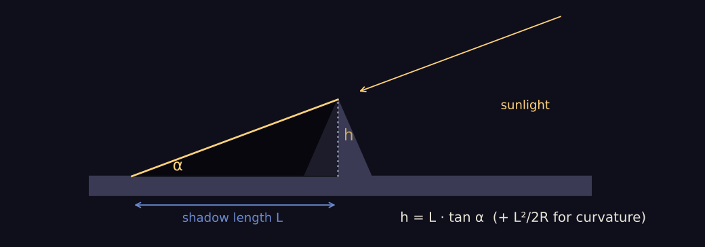
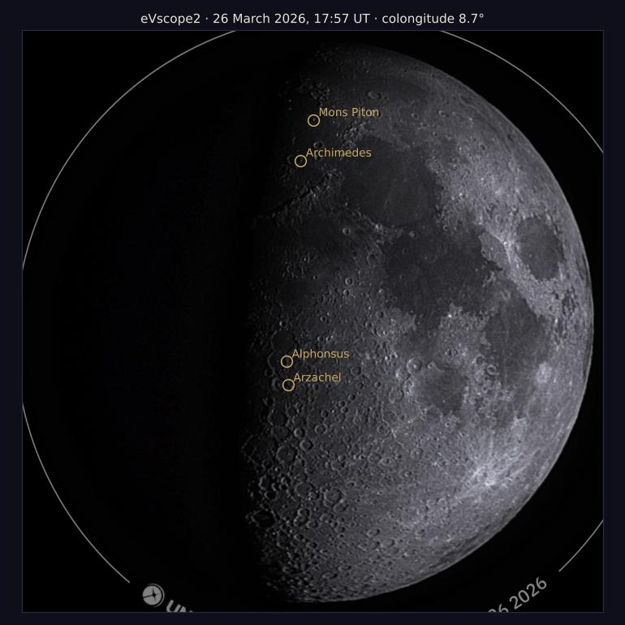
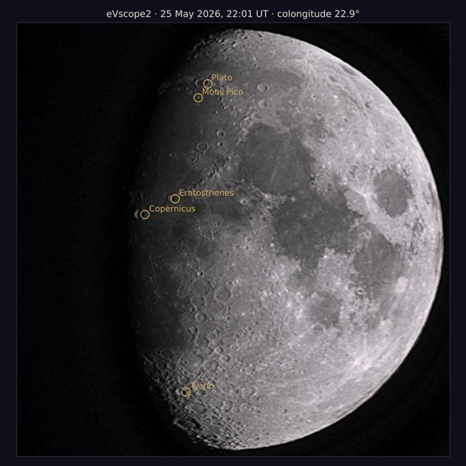
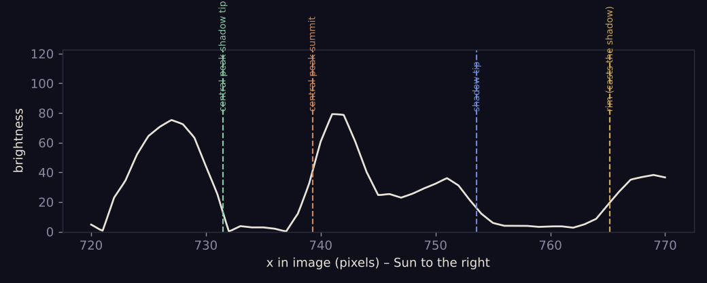
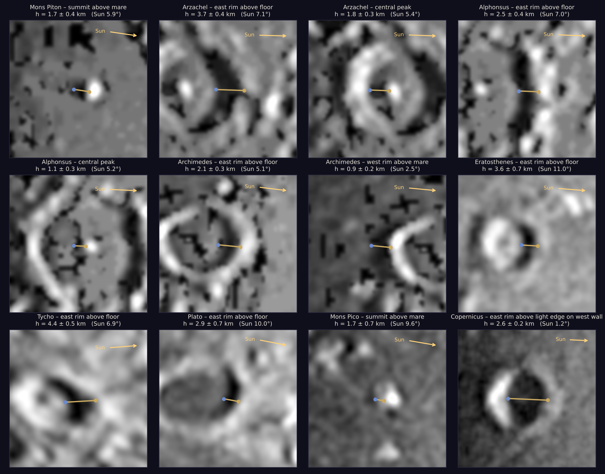
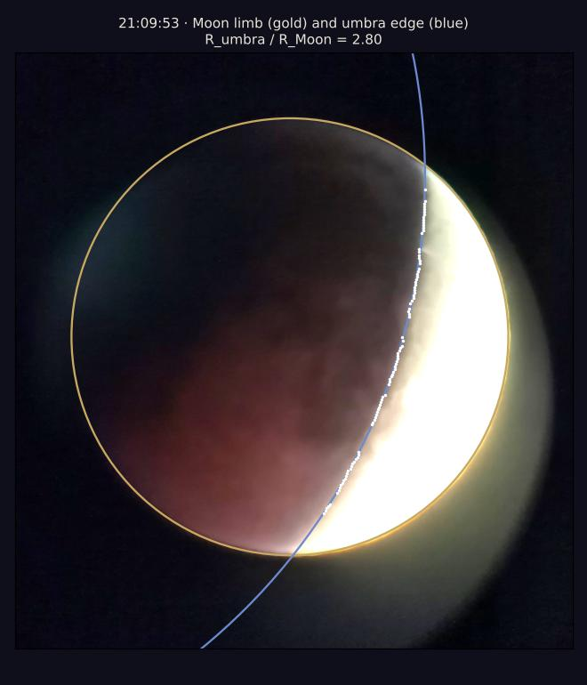
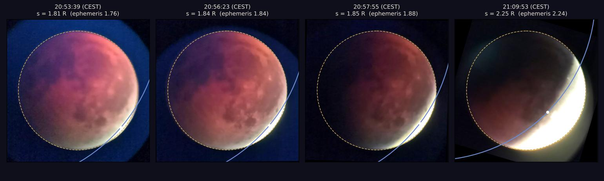
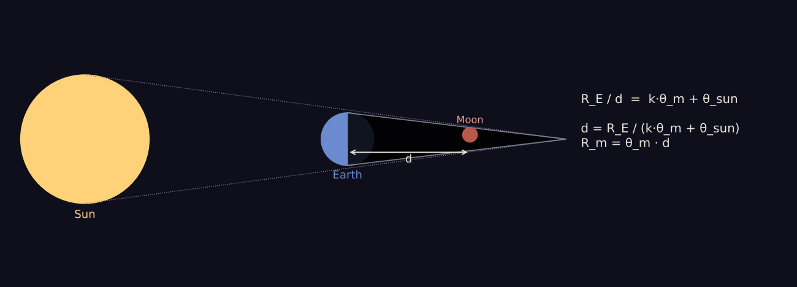
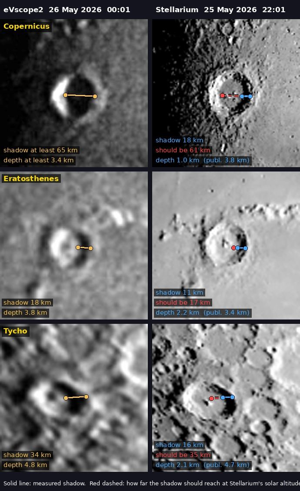
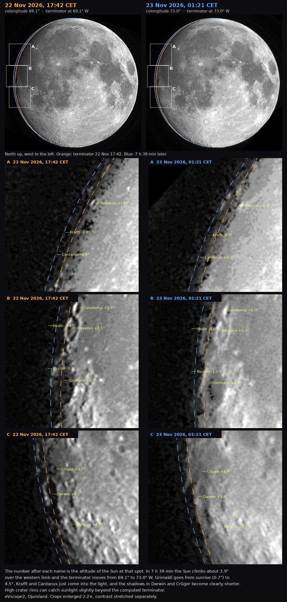

Two old methods applied to my own images. Galileo found the heights of lunar mountains from their shadows. Aristarchus and Hipparchus used the Earth's shadow during a lunar eclipse to find the size and distance of the Moon. Both can be done today with a small telescope and a camera, even a phone held up to the eyepiece.
Download the report as PDFWhen the Sun is low over a place on the Moon, mountains and crater rims cast long shadows. If we know the length L of a shadow and the altitude α of the Sun above the horizon at the tip of the shadow, the height is
At very low solar altitudes the shadows are so long that the curvature of the Moon matters, so I work out the geometry fully in three dimensions: the sunlight grazes the summit and meets the surface at the tip of the shadow. To first order the curvature adds a term L²/(2R) when α is the solar altitude at the shadow tip. Using the solar altitude at the mountain instead, the term must be subtracted, because the Sun stands L/R higher there.

I used two of my eVscope2 images (built-in camera and stacking) with long shadows near the terminator: 26 March 2026 at 17:57 UT and 25 May 2026 at 20:01 UT. The eVscope2 has a focal length of 450 mm and 2.9 µm pixels, so the scale is 1.329″ per pixel, or 2.4–2.5 km per pixel at the centre of the disc. As a check, the Moon in a raw frame from 22 November 2026 has a radius of 741.5 pixels, and the ephemeris gives 737–741 pixels for that evening.
For each image I found the centre and radius of the Moon from the bright limb, and the rotation of the image from 10 known craters. The fit is good to 2 pixels on average. From the time of exposure I calculated the position of the Sun as seen from the Moon, using the IAU rotation model for the Moon and an ephemeris for the Sun and Moon. That gives the Sun's colongitude, and from it the solar altitude at every single point.


I lay a line through the feature in the direction of the Sun and read off the brightness along it. The shadow begins where the sunlit slope ends, and it ends where the brightness has risen halfway to the sunlit floor. Both points are converted to selenographic coordinates, and the height follows from the geometry.


| Feature | What was measured | Sun altitude at tip | Shadow | Measured height | Published |
|---|---|---|---|---|---|
| Mons Piton | summit above Mare Imbrium | 5.9° | 15.5 km | 1.7 ± 0.4 km | 2.25 km |
| Arzachel | east rim above floor | 7.1° | 27.5 km | 3.7 ± 0.4 km | depth 3.6 km |
| Arzachel | central peak | 5.4° | 18.6 km | 1.8 ± 0.3 km | 1.5–2.1 km |
| Alphonsus | east rim above floor | 7.0° | 19.2 km | 2.5 ± 0.4 km | depth 2.7 km |
| Alphonsus | central peak | 5.2° | 11.7 km | 1.1 ± 0.3 km | 1.5–2.2 km |
| Archimedes | east rim above floor | 5.1° | 21.8 km | 2.1 ± 0.3 km | depth c. 2.1 km |
| Archimedes | west rim above mare | 2.5° | 19.1 km | 0.9 ± 0.2 km | – |
| Eratosthenes | east rim above floor | 11.0° | 17.9 km | 3.6 ± 0.7 km | depth 3.4 km |
| Tycho | east rim above floor | 6.9° | 33.6 km | 4.4 ± 0.5 km | depth 4.7 km |
| Plato | east rim above floor | 10.0° | 16.2 km | 2.9 ± 0.7 km | 1.0–2.0 km |
| Mons Pico | summit above Mare Imbrium | 9.6° | 9.6 km | 1.7 ± 0.7 km | 2.4 km |
| Copernicus | east rim above the light edge on the west wall | 1.2° | 65 km | ≥ 2.6 ± 0.2 km | depth 3.8 km |
The uncertainty corresponds to moving each end of the shadow by one pixel. The crater depths agree with the published values within the uncertainty: Arzachel, Alphonsus, Archimedes, Eratosthenes and Tycho. Copernicus only gives a lower limit, because with the Sun just 1.2° above the horizon the whole floor is in shadow and the light only begins up on the west wall. On the other hand, the central peaks catch the sunlight in the middle of the dark crater.
Other sources of error: the images have been sharpened, which moves edges slightly. The time in the image file may be local time or UT. I have taken the time stamps as local time and converted them to UT (UT+1 in March, UT+2 in May), which fits the calibration slightly better, but an hour's difference shifts the solar altitude by 0.5° and changes the heights by 5–10 %.
During the total lunar eclipse of 7 September 2025 I photographed the Moon through my Celestron AstroFi 6 with my phone held up to the eyepiece just as it was leaving the Earth's umbra. My eVscope2 could not be used that evening, because the sky was too bright for it to find stars to orient itself by. The edge of the shadow is part of a circle, and its curvature tells how large the Earth's shadow is compared with the Moon.

The radius of the shadow in lunar radii is
The value is the mean of nine fits with different smoothing and cut-offs (2.64–2.86). Pure geometry gives 2.70 for that evening, and with the 2 % by which the Earth's atmosphere enlarges the shadow (Danjon's rule) it becomes 2.75.

The Earth's shadow is a cone, because the Sun is larger than the Earth. At the Moon's distance d, the angular radius of the cone is the Earth's radius seen from the Moon minus the angular radius of the Sun:

Here θm is the angular radius of the Moon and θsun = 0.265° that of the Sun. The Moon's angular diameter that evening can be read off in Stellarium: 32.43′ at 21:07, so θm = 0.2703°. With RE = 6371 km this gives d = 361,000 ± 8,000 km. But the measured k includes the 2 % from the atmosphere (Danjon's rule), whereas the formula holds for the geometric shadow. Dividing k by 1.02, the result becomes (the true distance from the centre of the Earth was c. 369,600 km; Stellarium gives 368,478 km, but that is the distance from Djursland)
Aristarchus could not measure the angular size of the Moon accurately, but he knew that the Sun and the Moon look the same size. If we put θsun = θm, the angles drop out entirely for the radius of the Moon:
This is the result of Aristarchus and Hipparchus in modern form: the Moon is just under a quarter the size of the Earth. With the classical angular radius of 0.25°, the same calculation gives a distance of 383,000 km, close to the mean distance of 384,400 km. My eVscope2 images from other nights give an average θm = 0.2657°, but that is not good enough: the Moon's distance varies by ±5 %, and that evening the Moon was close to perigee.
I compared with screenshots of the same eclipse from the planetarium program Stellarium. Stellarium puts the Earth's shadow in the right place, but draws its edge as a soft transition that curves far too much. Circles fitted to the edge give k ≈ 1.0–1.6, so the curvature cannot be used. The position of the edge is right, however. If s is the distance from the centre of the Moon to the centre of the shadow, calculated from the coordinates of the Moon and the Sun, and x is the distance of the edge from the centre of the Moon, counted positive towards the bright side and negative towards the dark side, then
| Time (CEST) | s | x | k |
|---|---|---|---|
| 21:07:44 | 2.17 | +0.56 | 2.74 |
| 21:25:44 | 2.74 | −0.03 | 2.71 |
| 21:45:44 | 3.38 | c. −0.6 | c. 2.78 |
This makes a good exercise for students without a telescope: read off RA and Dec for the Moon and the Sun in Stellarium, add 12 hours to the Sun's RA and change the sign of its Dec to find the centre of the shadow, and calculate the angular distance with the spherical law of cosines. For the shadow heights, however, Stellarium is not reliable. Stellarium on the phone draws the shadows of mountains and craters from elevation data, but the shadows are too short. I compared my eVscope2 image of 25 May 2026 at 22:01 CEST (20:01 UT) with Stellarium set to exactly the same time and measured the shadows in the same way:
| Feature | Stellarium | My photo | Published |
|---|---|---|---|
| Copernicus | 1.0 km | ≥ 2.6 km | 3.8 km |
| Eratosthenes | 2.2 km | 3.6 km | 3.4 km |
| Tycho | 2.1 km | 4.4 km | 4.7 km |
| Plato | 0.9 km | 2.9 km | 1.0–2.0 km |
| Mons Pico | 1.5 km | 1.7 km | 2.4 km |
For the craters with a reliable published value, Stellarium gives only 27–66 % of the true height, on average about half. Only for Mons Pico do Stellarium and the photo agree, and there both are too low, because the shadow is under four pixels long in the photo. A likely explanation is that Stellarium computes the shadows from a precomputed elevation map of limited resolution, which rounds off the sharp crater rims. Stellarium 23.1 added an option to sharpen the shadows on the Moon with supersampling.

The time of the comparison was set by my photo. On 25 May the Moon was just past first quarter, and Copernicus, Eratosthenes and Tycho lay near the terminator, where the shadows are long. That the sky is bright on a summer evening hardly matters, because the Moon is far brighter than the twilight sky. What counts is the altitude of the Sun at the crater on the Moon, not how dark it is here. In Stellarium the atmosphere can be switched off (key A), making the sky black even in twilight. For teaching, autumn and winter evenings are still the best: the first-quarter Moon then stands high in a dark sky early in the evening.
The terminator is the boundary between day and night on the Moon. It moves about 0.5° in selenographic longitude per hour, because the Moon turns once relative to the Sun in 29.5 days. This can be seen in two images taken a few hours apart. My two eVscope2 images were taken on 22 November 2026 at 17:42 CET and on 23 November at 01:21, 7 h 39 min later. The Moon was 12 days old, so the terminator lay right out at the western limb. The colongitude rose from 69.1° to 73.0°, and the terminator moved correspondingly from 69.1° to 73.0° west.
On the full disk the shift is only a narrow strip at the limb, so the figure also shows three enlarged crops. The number after each crater is the altitude of the Sun above the horizon at that spot, computed from the positions of the Moon and the Sun. Krafft and Cardanus go from night (−3.8° and −3.6°) to sunrise. Over Grimaldi the Sun climbs from 0.7° to 4.5°, and over Darwin from 0.2° to 3.8°. The shadows behind the crater rims become clearly shorter. High rims can catch sunlight slightly beyond the computed terminator, just as mountain tops on Earth are sunlit before the Sun rises in the valley.

This makes a good exercise for students: take two images on the same night, look up the colongitude for both times in Stellarium or Virtual Moon Atlas, and see which craters have come into the light. With the shadow method of section 1 one can also see that the shadows get shorter as the Sun rises.
Stellarium is an excellent program for finding out where and when something can be seen, and its coordinates are accurate. But the picture on the screen is a drawing, not a photograph, and that must be remembered when students want to measure on it:
In short: use Stellarium for numbers (coordinates, times, angular sizes, colongitude) and real photographs for measuring shadows and shapes.